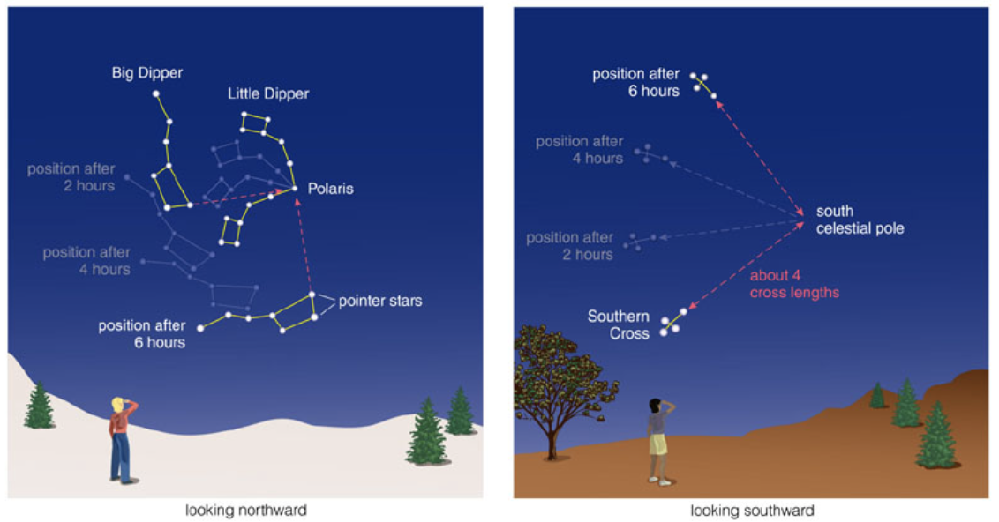
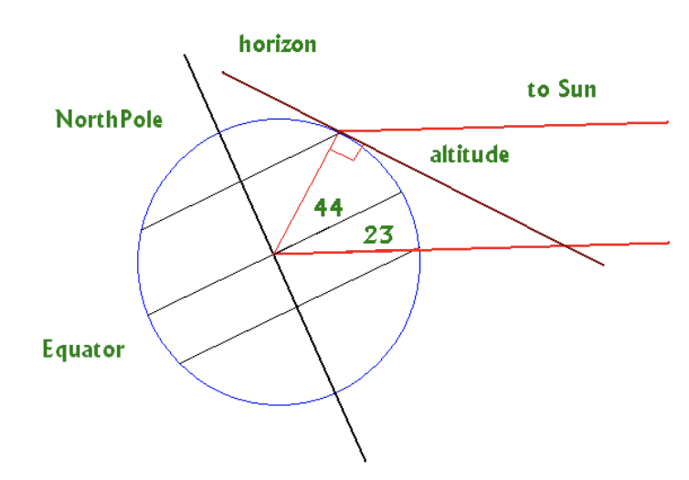

Plus up to one more in calculation, but to be removed (rounded) when showing final answer
If you measure something to be 1.6 meters in size
but you give the measurement as 1.611309 meters then you are seriously misleading whoever is reading this number. The ‘11309’ are completely made-up and not truthful.
Motion of things in the sky
Motions appear complex because
motions are not (all) circular
motions are not in the same plane
we are on the Earth, spinning and moving
Naked Eye Astronomy
What can you determine about the Universe around us
With your eyes alone? no telescope, no photographs
perhaps with a time-keeping device and a protractor?
Much was known about the Universe – especially
about our Solar System – before the telescope was
invented
Most of what we can learn comes from making notes
of what we see… especially:
Where things are in the sky and how they move.
Where in the sky is the moon?
When is it full?
How is this related to the tides?
Where is Mars?
When is Mars bright?
Constellations
What are constellations
Today, we use the term constellation to mean one of 88 sectors into which we divide the sky, much as the United States is divided into 50 states. The modern boundaries between the constellations are imaginary lines in the sky running north–south and east–west, so that each point in the sky falls in a specific constellation, although, like the states, not all constellations are the same size.
Motions in the Sky
daily rotation of sky (of Earth, really!)
motion of Moon from one day to next, and
change in “phases”
motion of Sun from one day to the next
hard to notice, because when the Sun is up you can’t see the stars
but the Sun is in a (slightly) different part of the sky (with respect to the stars) every night
how can you tell that this is true?
in practice, we must deduce which stars lie behind and beyond the Sun by observing the stars visible in the opposite direction at night.
motion of planets
The individual paths of the Moon and planets in the sky all lie close to the ecliptic, although not exactly on it.
This is because the paths of the planets about the Sun, and of the Moon about Earth, are all in nearly the same plane, as if they were circles on a huge sheet of paper.
The planets, the Sun, and the Moon are thus always found in the sky within a narrow 18-degree-wide belt, centered on the ecliptic, called the zodiac
Rotation
earth rotation
Stars
Stars appear to lie on a great “celestial sphere” around Earth
Stars actually lie at different distances than what they appear on the celestial sphere
Stars make straight lines in a long exposure shot near the equator
Positions of Objects in the sky
how high is the sun
How high in “your” sky will an object be?
We are at a latitude of 44\degree
On 21 Dec the Sun is at a declination of -23.5\degree (would
be seen directly overhead at noon at latitude of -23.5\degree).
how high in the sky (altitude) is the Sun at noon?